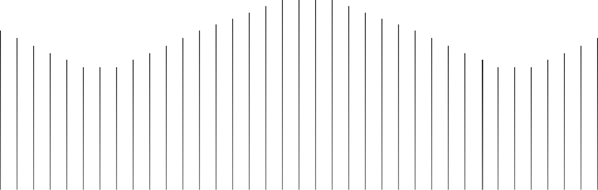

<footer>
    {% if page.lang == "lv" %}
    <a href="/lv/" class="footer-logo"></a>
    {% else %}
    <a href="/en/" class="footer-logo"></a>
    {% endif %}
    <div class="footer-info-container">
        <div class="footer-menu-container">
            
            {% if page.lang == "lv" %}
            <p class="footer-heading">Navigācija</p>
            <button class="footer-button" onclick="goToHref(/lv/)"><p class="footer-text">Sākums</p></button>
            <button class="footer-button" onclick="goToHref(/lv/products)"><p class="footer-text">Produkti</p></button>
            <button class="footer-button" onclick="goToHref(/lv/aboutus)"><p class="footer-text">Par Mums</p></button>
            <button class="footer-button" onclick="goToHref(/lv/contact)"><p class="footer-text">Sazinieties ar Mums</p></button>
            {% else %}
            <p class="footer-heading">Navigation</p>
            <button class="footer-button" onclick="goToHref(/en/)"><p class="footer-text">Home</p></button>
            <button class="footer-button" onclick="goToHref(/en/products)"><p class="footer-text">Products</p></button>
            <button class="footer-button" onclick="goToHref(/en/aboutus)"><p class="footer-text">About Us</p></button>
            <button class="footer-button" onclick="goToHref(/en/aboutus)"><p class="footer-text">Contact Us</p></button>
            {% endif %}
   
        </div>
        <div class="social-media-container">
            <p class="footer-heading">Social</p>
            <button class="footer-button"><p class="footer-text">LinkedIn</p></button>
        </div>
        <div class="contact-info">
            <p class="footer-heading">Contact</p>
            <p class="footer-text">contact@5w.lv</p>
            <p class="footer-text">+371 27 457 071</p>
        </div>
    </div>
    
</footer>
<script>
function goToHref(href) {
    window.location.href = href;
}
</script>